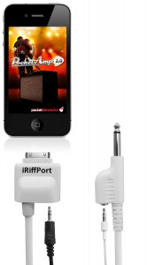
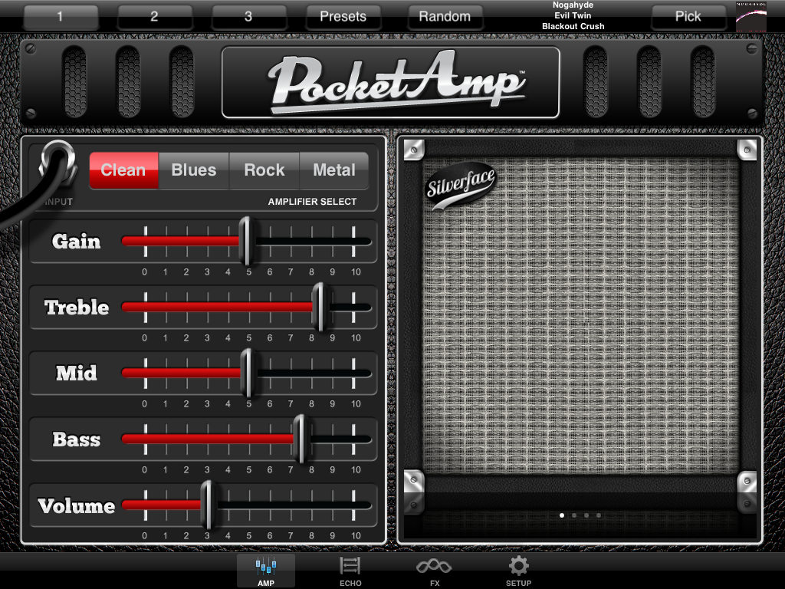
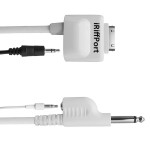

While electronic music makers have been the main focus for iOS app developers since the dawn of the App Store, the other music category getting some attention is apps for guitarists by way of amp simulators and other music tools aimed at shredders, pluckers, and strummers.
There are countless virtual guitar apps, allowing you to ‘strum’ the display, which are fun for about 30 seconds, but what is more interesting are the growing number of apps designed to play a ‘real’ guitar through, which offer virtual amps, cabinets, stomp boxes, tuners, metronomes, recording options, and more.
POCKETLABWORKS, Inc. is the brainchild of Kevin Robertson, whose interest in audio and signal processing has seen him work with amp legends, Bob Gallien and Richard Krueger, on their industry leading, professional bass guitar amplification products.
After realising the potential that smart mobile devices offered for musicians, Kevin founded POCKETLABWORKS, Inc. and set about creating a series of music apps which to date include PocketAmp, PocketGK, PocketSing, and PocketRap.
The company’s latest product is also its first hardware release. The iRiffPort Digital Audio Guitar Connection is a single cable, which simplifies the requirements for hooking an electric guitar, bass guitar, or even an acoustic guitar fitted with a pickup, to an iOS device. But more on the hardware in a moment.
Out of all of POCKETLABWORKS’ apps, I’ve spent the most time playing around with PocketAmp so far. This app is actually more than a year old now, but updates have appeared almost monthly since it launched. My first impression of the app was how clean looking the interface is, and also the decision not to go with the graphics of actual stomp boxes and traditional ‘knobs’ for tweaking the sounds. Instead, the app uses familiar looking faders for ALL the parameters and settings, along with clear labels for the various titles. It may not look as ‘authentic’ as some apps, in this respect, but dealing with faders is much more fluid, plus you can see much easier at a glance what the settings are too.
The app provides 4 main amp heads, themed after styles of music, and there are also 4 cabinets to pick from. From there, you can customise EQ, gain, delay, reverb, chorus, flanger, rotary, and tremolo settings. And then of course save presets of all your favourite configurations.
The app has always had a basic music player for jamming along with songs in your iTunes library, but the latest update adds some welcome features to this area, including the ability to alter the pitch and speed of songs, as well as setting loop points for practising certain sections.
Overall, the quality of the sound from the app is excellent. Overdriving the sound for a lead solo provides amazing sustain, and there is plenty of dynamic range when playing rhythm style riffs, both clean and dirty. As with other guitar apps, there is a noticeable noise gate that kicks in when the audio signal drops below a certain volume, and just at this point you can sometimes detect low level noise like hiss, though it’s only there momentarily before the gate takes over, and it’s really only detectable on the heavily overdriven sounds. (Update: I’ve since learnt that this ‘gate’ effect is adjustable, so by turning it all the way down to ‘0’ in the FX section, this means the gate doesn’t come into effect)

But now onto the main area of interest in this feature. The cable…….

When first unravelling the iRiffPort, it feels like a good length cable at 1.83 metres, and is about as thick at your average guitar cable, but it feels a little lighter.
One end of the cable plugs straight into the output of an electric guitar, while the other end features the standard 30-pin connector, making it compatible with all current and recent models of iOS devices, including the iPad, iPhones, and iPod Touches (4G). This type of connection has one clear advantage over other audio interfaces that use the headphone port on iOS devices, as it is a digital connection rather than an analogue one, since these can suffer from added and unwanted noise. In addition, the guitar jack input features a Hi-Z Low Noise Guitar Preamp with Soft Clipping for improved signal. It’s also worth noting that the 30-pin end of the cable is slightly recessed, which gives it a better chance of connecting to devices with thicker protective cases/covers.
This custom cable also features, not one, but two audio outputs for monitoring the audio signal of the guitar when using it with a supported app. At the guitar jack end of the cable there is a stereo 3.5mm ‘headphone’ output, which you can control the volume with the up/down controls on the iOS device itself. At the 30-pin end of the cable is another stereo 3.5mm ‘line out’ which is designed to send the signal to a mixer or your DAW input. The additional audio cables required for this are not supplied with the iRiffPort product, though they can be bought for just a few dollars, if you don’t already have some spares lying around.
The jury here is still out on the cable’s white finish. I mean, it’s just so bright! I guess at least the cable is dead easy to pick out of a spaghetti pile of other audio cables. It’s just not, well, all that rock and roll, if you know what I mean. Just using it in a home/studio environment (which it is mainly designed for) most users won’t be too fussed with the colour.
I did have issues trying the iRiffPort cable out on an iPod Touch that is still running v4.0 iOS, where it wasn’t supported. But POCKETLABWORKS do say you need v.4.3 or later. Other than that hiccup, it was recognised in my iPhone and iPad, which are running v4.3 and v5. respectively.
As far as compatible apps go, there is overwhelming support for the iRiffPort by almost every guitar app available, starting with POCKETLABWORKS’s own PocketAmp and PocketGK, and then GarageBand, AmpKit, GuitarTone, JamUp Pro, iShred LIVE and others. The only app I have in my library that isn’t currently supported is IK Multimedia’s AmpliTube, which only works with analogue guitar interfaces like this company’s own iRig product.
Given the wide app support for the iRiffPort Digital Audio Guitar Connection, and the high quality sound it produces, this is a must for guitarists working in the app world. The initial outlay of US$100 may seem a little steep to some, but it’s an investment you won’t regret if you are planning on using it on a regular basis.
For details on where to buy it, check here – http://www.pocketlabworks.com/iRiffPort-Buy-Now.html
And for details on all POCKETLABWORKS’ products, check here – http://www.pocketlabworks.com/index.html